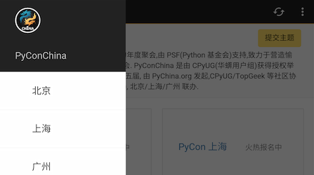

基于SL4A还有QPyMobileInterfaceLibrary(milib对象), QPython的WebApp可以进行更灵活的设计，以及和原生特性功能和接口进行更加紧密的互动
QPyMobileInterfaceLibrary 提供的功能介绍
- 提供原生的主面板、导航接口，如抽屉式菜单，6宫格主面板布局 ...
- 提供原生方法来加强JS，如原生的Progress进度，提示框，检查网络 ...
SL4A介绍
- 地理位置等等
- 传感器等操作
- Android其他特性 ...
其他 Py 库支持
- 调用dex中的java对象及方法 ...
- 底层的网络接口
- More ...
最后

图:PyConChina dashboard
接下来就是编码工作了
<< 上一步（为何用QPy）
下一步（新建项目） >>